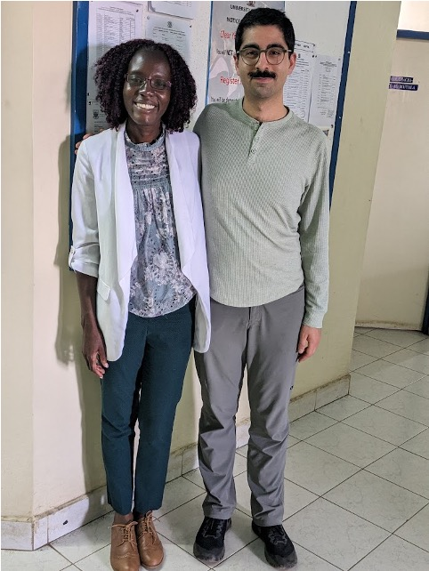

In February 2023, two strangers met in Nairobi: Kian, an X-ray imaging researcher, and Norah, a local radiologist. While Kian sought Norah's perspectives on the limitations of radiography, Norah pointed to a more pressing need: affordable radiation monitoring for her team. The seed for OpenDosimeter was planted: a mission to create an accessible, real-time radiation monitoring solution for healthcare workers globally.
The Problem
For radiation workers, dose monitoring from exposure to X-ray radiation is critical, making wearable dosimeters invaluable to ensure safe practices. While there is little data on the global availability of personal dosimeters, many workers experience limited or non-existent access. Traditional dosimeters can be prohibitively expensive, and require complicated logistics around calibration, read-out, and reporting - all leading to radiation workers having restricted insight into their own exposure levels.
Our Solution
OpenDosimeter addresses these challenges with a low-cost, open-source, real-time dosimeter that is calibrated using Am-241 from a household ionization smoke detector. This eliminates the need to rely on external infrastructure for calibration and read-out. Lastly, the open design allows anyone to replicate and build their own personal dosimeter, empowering radiation workers to monitor their exposure more effectively with real-time feedback. The OpenDosimeter also acts as a reference design that invites people to make derivatives adapted to their needs.
Technical Specifications
- Open design: Hardware and software designs are fully open-source, enabling reproducibility and customization
- Affordable: Total cost to build one is below $100
- Compact: Small in size, measuring 73 mm x 42 mm x 23 mm with the case
- Accurate: Current software version enables dose rate accuracy between around 0.5 µSv/h to 1 mSv/h (±20% accuracy), with an upcoming software upgrade enabling up to 50 mSv/h (in development)
- Battery-powered: Up to 20 hours of battery life (<70 mA @ 3.7V, 1200 mAh LiPo battery)
- Calibratable: Using Am-241 from any household ionization smoke detector for spectral/dose calibration
- Real-time: Direct feedback on radiation exposure, compared to passive dosimeters (e.g., OSL or TLD badges) requiring external readout
- Data logging: The last 10 hours of dose values are stored on the device; extracted through USB connection and our web-interface here
Funding